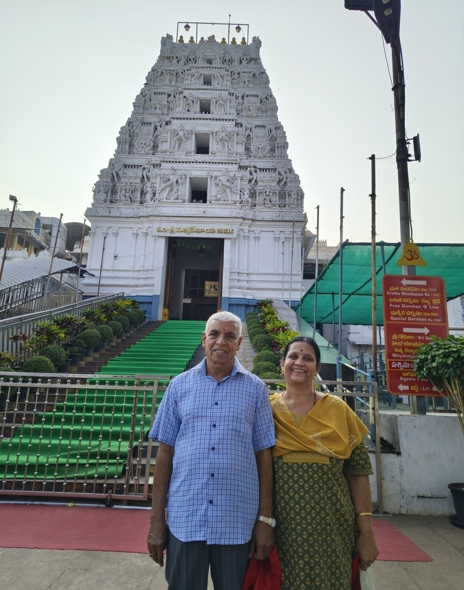
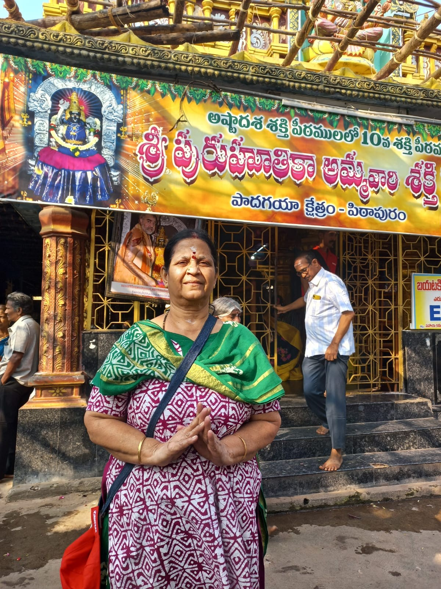
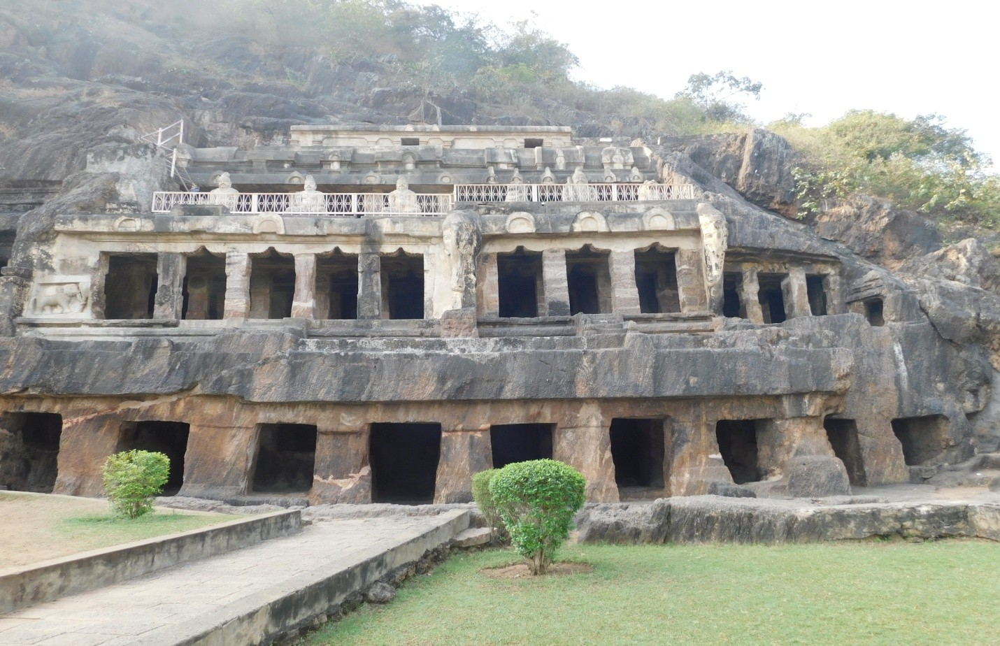
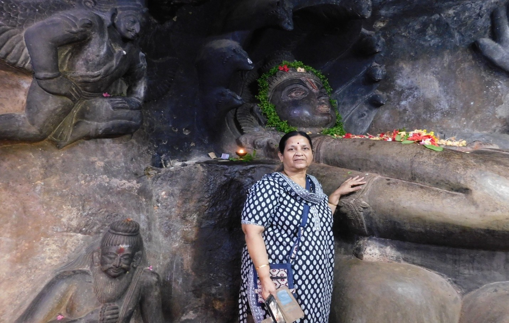
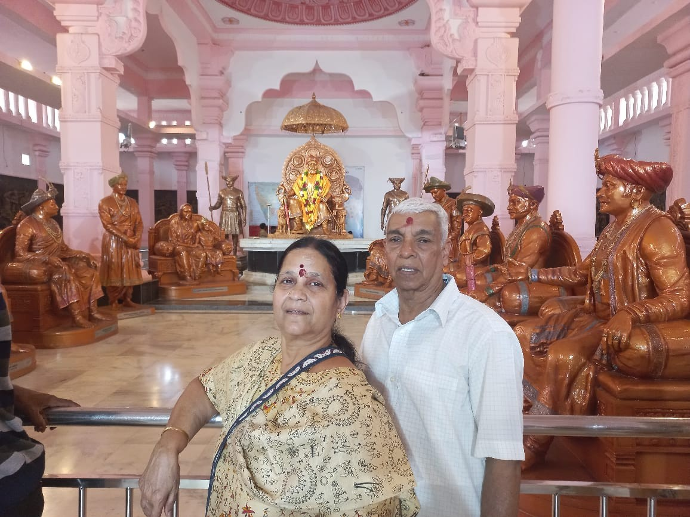
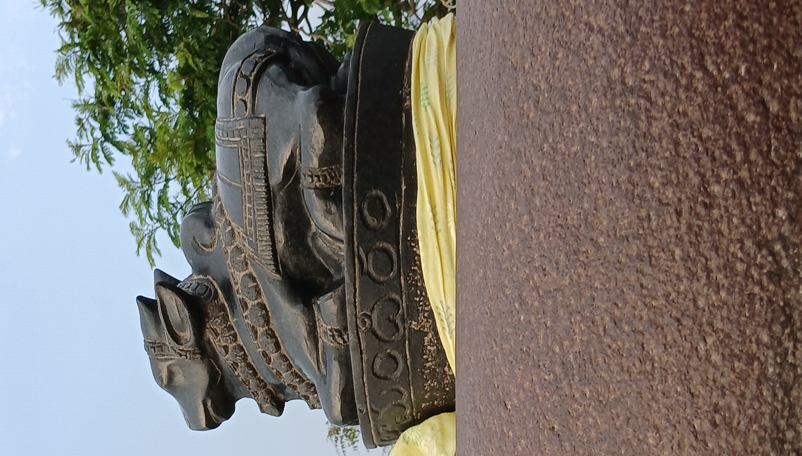
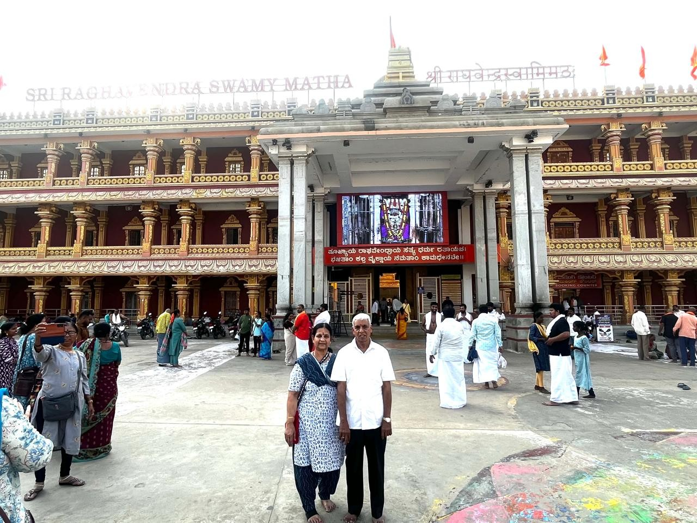
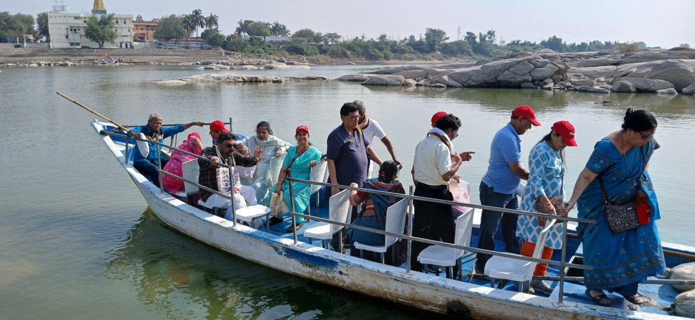
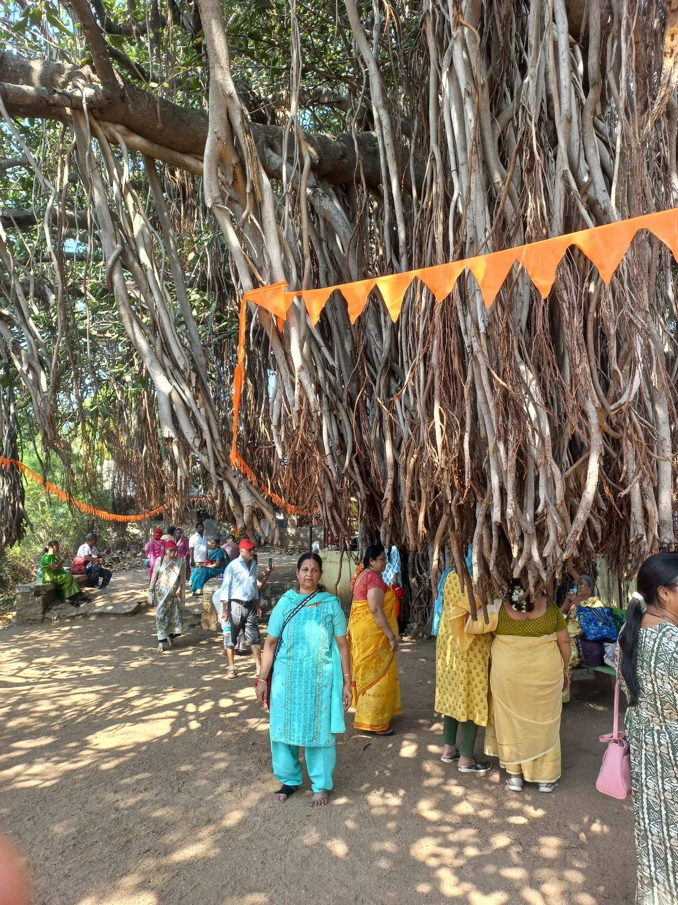

After reaching the MSRTC bus stop, it was told that all MSRTC buses to Mumbai got canceled. The reason was not known. So we had to book a cab and reached Mumbai Domestic Airport (Terminal 1). We reached the airport around midnight. Till 3 am, we just took rest in the airport. There was no direct flight to Rajahmundry from Mumbai. So we took a flight from Mumbai to Hyderabad and then we took another flight to Rajahmundry.

IndiGo flight 6E5012 from Mumbai to Hyderabad was on time. Travel time to Hyderabad was one hour. We reached Hyderabad at 7:30 am. From there, we took an onward flight to Rajahmundry. This IndiGo flight was a small one; only 40 seats were there. Flight duration to Rajahmundry is an hour. It departed at 8:40 am. We landed at Rajahmundry airport at 10 am.
Rajahmundry airport is a small airport. After collecting the bags, we proceeded to Kakinada where our hotel accommodation had been booked. Road travel was about 1 hour 30 minutes. Our accommodation was booked in the Sarovar Portico hotel. The hotel was good. We took a bath and got ready after lunch. Around 2 pm, we started our temple visit. Tour guides Mr. Bhushan and Mr. Sidarth were very helpful throughout the tour.
First, we went to Annavaram, about a 45-minute drive from Kakinada. From the bus parking place, we went to the temple by auto-rickshaw. The temple here is called Veera Venkata Satyanarayana Swamy temple. This temple is over a rock. We had to climb about 100 steps. This is a Vishnu temple. Fortunately, there was no crowd and we had darshan without any difficulty. The rock where the temple is located is close to the river called Pampa.
From Annavaram, we went to Pithapuram. It is about a 40-minute drive. The next temple we visited was the Kunthi Madhava Swamy temple. It is a Vishnu temple. From Kunthi Madhava Swamy temple, we went to the Sri Pada Sri Vallabha temple. This is the first incarnation of Sri Dattatreya and a most important temple for Maharashtrians (Guru Temple). We spent more than an hour in this temple. We attended the bhajan and then aarti in this temple. After the visit to this temple, we returned back to the hotel.
Morning around 6 we got up. By 7 we took breakfast. By 7:45 we left Kakinada and proceeded to Vijayawada, 250 km away. Before leaving Kakinada, we visited the Kukkuteswara temple of Pithapuram.

This is a Shiva temple. The Shivalingam is fairly big and made of spatikam (crystal). So the deity is in white color. Opposite to the deity, a big Nandi is also there. This one is made out of a single stone. Amman sannidhi is also there. This is considered as one among the 18 Shakti Peethas.On the way to Vijayawada on the highway, we took a break for lunch at a hotel, Garuda. Chapati, rice, sabji, kesari, sambar, rasam, and dahi were served and the food was good. Around 3 pm, we reached Vijayawada. Before going to the hotel, we wanted to visit the Kanaka Durga Temple. Our bus was parked at a parking place. From the parking area, we went to the temple by auto-rickshaws. Since mobiles are not allowed in the temple premises, we left them in the bus.
Kanaka Durga temple is over a hill. It is about 800 steps to climb. The deity Kanaka Durga Amma is swayambhu and powerful, and blesses the devotees who pray to her. So throughout the year, people from different parts of the country come here to seek her blessings. A lift facility is available to avoid climbing. Kesari arranged for us to go via the lift. They charge Rs 100 per head. A proper queue system exists; we didn't see any mad crowd. We had a nice darshan. It took around an hour. After the Kanaka Durga temple, we went to the hotel: Lemon Tree, MG Road, Vijayawada. This is a 5-star hotel and the rooms are luxurious. Food was excellent and a variety of items were served.
After breakfast, we left the Lemon Tree Hotel, Vijayawada and proceeded to Srisailam. Srisailam is 260 km away from Vijayawada. From Vijayawada, 10 km away, the Undavalli Caves are located.

We reached this spot around 9 am. Undavalli is a four-storied rock-cut Vishnu temple.
This temple belongs to the 4th century. On the 3rd floor, a five-foot Vishnu statue over the five-headed snake is very popular and the most attractive sculpture of this cave.Around 1 pm we had our lunch at Kurnool. It was typical Andhra type food: rice, sambar, rasam, vada, few imli chutneys, and curd. Our next stop before Srisailam was at a Ganesh Temple called Sakshi Ganapathi. A crowd was there, but a queue was followed. It took about 15 minutes. After this temple visit, we proceeded to the hotel where our accommodation was booked. The hotel is called Srisaila's Nest. We reached the hotel around 6:30 pm. It is a small hotel; the room was clean and good. For night dinner, we had chapati and pulao.
Morning by 6 we got up. By 7:30 we had breakfast: idli, vada, and upma. After breakfast, we proceeded to Mallikarjuna Temple, one of the 12 Jyotirlinga temples. To avoid the crowd, Kesari arranged Rs 200/- tickets for darshan. Senior citizens can go in this queue and they need not pay; an Aadhaar card is shown for age proof. Because of this, we didn't stand in long queues. Also, we had darshan of Bhramaramba Devi in the same temple, which is one among the Shakti Peethas.

Shivaji Maharaj visited this temple. In his memory, a museum is created here. His statue and more exhibits showing his wars against Mughals are depicted in this museum. After seeing the museum, we returned back to the room. We took lunch in the hotel and took rest till 4:30 pm. After tea, we proceeded to another famous Shiva temple called Shikhareswara Swamy Temple. It is over a hill and we had to climb about 150 steps. In front of the deity, a small black Nandi is there.

If we see through in between the ears of the Nandi, we can see the Srisailam Mallikarjuna temple. The surroundings of this temple are beautiful.
We left Srisailam after breakfast for Mantralayam. Mantralayam is about 250 km away. At Kurnool around 1:30 pm, we had our lunch. Around 4:30 we reached Mantralayam. Our tour guide told all male tourists that we should enter this temple in "Salman Khan style." All he meant was that before entering the temple, we must remove our shirts! There was no crowd in the temple. We had good darshan of the Brindavan.
After a cup of coffee, around 5:30 we left Mantralayam and proceeded to Raichur, about an hour's travel. After reaching Raichur, before going to the hotel, we visited one Balaji temple which was inside the premises of the medical college in Raichur. After the visit to the Balaji temple, we landed at the Royal Fort hotel. This hotel name is Royal Fort but it was very poorly maintained. Anyway, it is just a one-day stay here.

Morning at 7:30 after a poor breakfast, we left the Royal Fort for the Kuruvapur Sripada Vallabh Temple. This temple is across the river Krishna. We came up to the river bank by bus and crossed the river by boat. In the Krishna river, the water flow was low and rocks were visible in between. So the boat ride took a much longer time than the usual ride time. At last, we reached the other side of the Krishna river and walked to the temple. The temple has stipulations over the dress code: for males, a dhoti is compulsory and females have to wear a saree or salwar.
Also, in the temple premises, one very big Banyan tree is there.

People say it is a one-thousand-year-old tree. After the darshan, we returned back to the other side of the Krishna river by boat, took the bus, and reached the hotel. In the evening, we left the hotel for the railway station and took the train to Pune. We stayed in the hotel till 7 pm and then reached the station. The train was on time, and on 23rd Feb morning, we reached Pune safely.Temple & Destination Summary
| City | Place | Temple Name | Main Deity |
|---|---|---|---|
| Kakinada | Annavaram | Sri Veera Venkata Sathya Narayana Temple | Sri Veera Venkata Sathya Narayana (Vishnu) |
| Pithapuram | Pithapuram | Kunthi Madhava Swamy Temple | Kunthi Madhava Swamy (Vishnu) |
| Pithapuram | Pithapuram | Sri Pada Srivallabha Temple | Dedicated to Saint Sri Pada Srivallabha |
| Kakinada | Pithapuram | Kukkuteswara Temple | Shiva & Shakti Peetham |
| Vijayawada | Vijayawada | Kanaka Durga Temple | Kanaka Durga Devi |
| Srisailam | Srisailam | Mallikarjuna Temple | Shiva (Jyotirlinga) |
| Srisailam | Srisailam | Shikhareswara Swamy Temple | Shiva |
| Mantralayam | Mantralayam | Raghavendra Swamy Temple | Brindavan of Swamy Raghavendra |
| Raichur | Kuruvapur | Sri Pada Srivallabha Temple | Sri Pada Srivallabha |
Journey Reflection
This pilgrimage was a remarkable odyssey spanning the vibrant landscapes of Andhra Pradesh and into Karnataka. Starting from the coastal delta of Kakinada and traversing through the bustling spiritual hub of Vijayawada, we ascended the sacred Nallamala hills to reach the powerful Jyotirlinga at Srisailam. The journey concluded with a unique river crossing to the ancient island of Kuruvapur. Despite transport hurdles and a few modest stays, the spiritual fulfillment of visiting multiple Shakti Peethas and the cherished "Guru" temples made this an unforgettable 75th-year milestone. A true testament to the beauty of faith and the resilience of a traveler.